Instalar Samba AD-DC (DC1) Controlador de Domínio Principal
Inciando o processo
No ínicio da instalação do sistema, podemos inserir alguns dados como: IP estático, DNS e Domínio como mostra a figura abaixo:
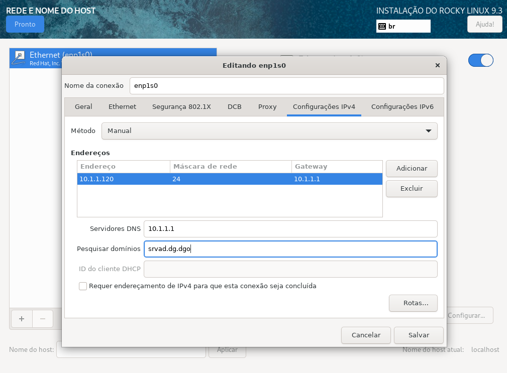
Continuando, temos a segunda tela para verifcação dos dados inseridos:
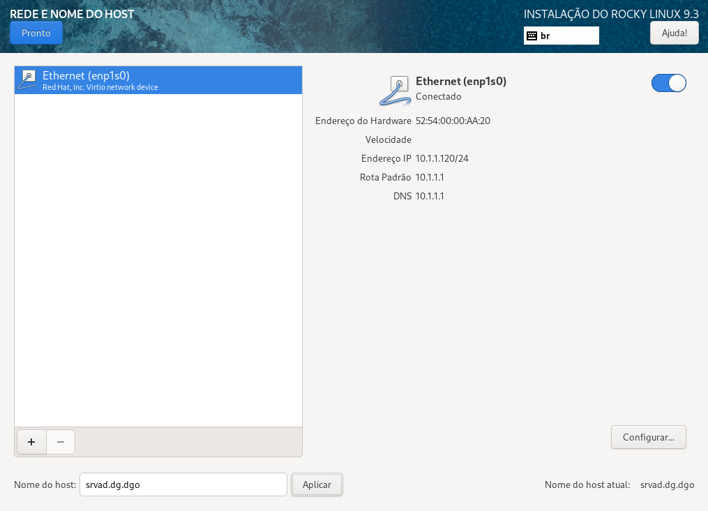
No resumo da instalação crie um usuário e senha do sistema. Crie também uma senha para o usuário root e Inicie a Instalação
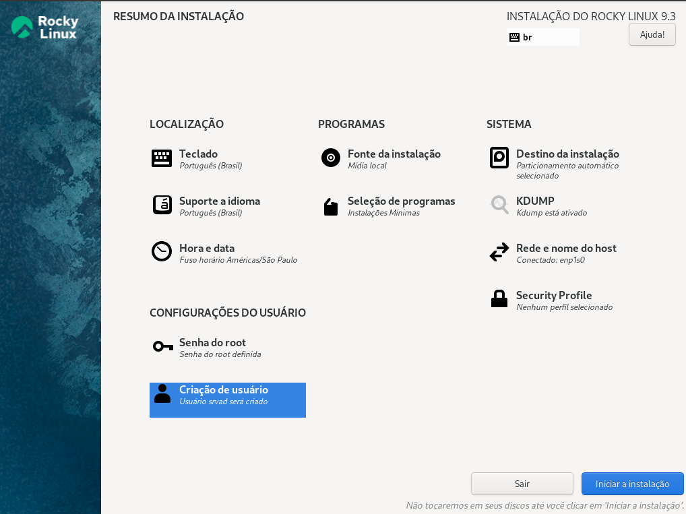
ATENÇÃO: TODOS os comandos utilizados serão como usuário root.
Com o sistema instalado, teremos uma tela parecida como esta abaixo:
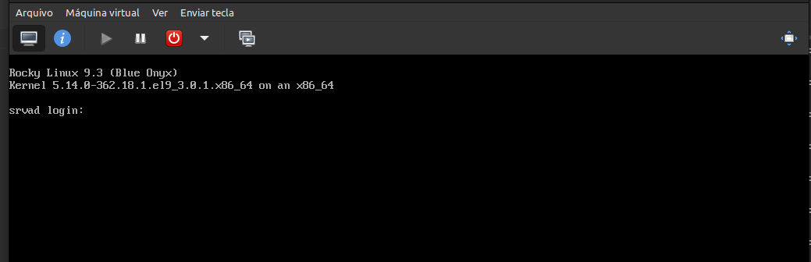
Após ter logado no sistema, vamos atualizar e remover pacotes que não serão utilizados. Execute o comando:
dnf update -y && dnf autoremove -y
Instale o utilitário wget e o editor de textos nano com o comando:
dnf install -y wget nano
Verifique a rede
Verifique sua configuração de rede . Seu controlador de domínio deve possuir um endereço de IP fixo, ou seja, estático, máscara de sub-rede, deve possuir um IP de DNS, um Gateway e o nome de seu.dominio. Uma das formas para configurar a rede pode ser através do terminal, executando o comando que abre uma GUI:
nmtui
Selecione Editar uma conexão.
Selecione a opção Editar.
Configure seu endereço ip , máscara de Sub-rede e seu Gateway.
Na opção Servidor DNS: inserir o IP de DNS desejado .
Não esqueça de inserir em Domínios de pesquisa: seu.domínio.
Com as teclas de direção vá até o fim e selecione OK para salvar.
Selecione Voltar e então no menu: selecionar escolher a opção: Definir nome de máquina do sistema:dc1.seu.dominio.
Agora selecione a opção: OK para salvar. Novamente selecione OK. Deve retornar para o terminal do sistema.
Editar o arquivo /etc/host:
No terminal execute o comando:
nano /etc/hosts
Insira os dados referentes ao seu servidor:
127.0.0.1 localhost localhost.localdomain localhost4 localhost4.localdomain4
::1 localhost localhost.localdomain localhost6 localhost6.localdomain6
# inserir os dados de seu server DC
10.1.1.120 dc1 dc1.seu.dominio
Onde:
10.1.1.120 = É o endereço IP de seu próprio AD-DC (controlador de domínio)
dc1 = É nome simplificado do seu host controlador de domínio
dc1.seu.domínio = nome do host + seu.domínio
Algum Samba está rodando?
Verifique se existe algum processo do samba rodando. Utilize o comando:
ps ax | egrep "samba|smbd|nmbd|winbindd"
Remova qualquer configuração de arquivo: smb.conf que houver, checando com o comando:
smbd -b | grep "CONFIGFILE"
# O resultado pode ser parecido com a linha abaixo:
-bash: smbd: command not found
Remova o arquivo krb5.conf
Remova o arquivo /etc/krb5.conf com o comando:
rm /etc/krb5.conf
Instale os repositórios de Plugins CRB e Epel
Instale os plugins habilitando o repositório CRB. Instale também o repositório epel release e execute um update com os comandos abaixo:
dnf config-manager --enable crb && dnf install epel-release -y && dnf update -y
Cheque os repositórios adicionados com o comando:
dnf repolist
O resultado deve ser algo como:
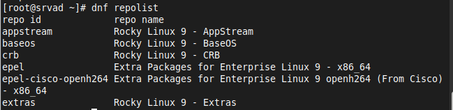
Setar servidor NTP (horário):
Listando as opções de hora local.
timedatectl list-timezones
Para setar o timezone desejado, use o comando:
timedatectl set-timezone America/Sao_Paulo
Verifique o timezone setado:
timedatectl
O resultado deve parecer como abaixo:
Local time: qua 2023-04-12 09:04:22 -03
Universal time: qua 2023-04-12 12:04:22 UTC
RTC time: qua 2023-04-12 12:00:16
Time zone: America/Sao_Paulo (-03, -0300)
System clock synchronized: yes
NTP service: active
RTC in local TZ: no
Instale dependências necessárias
Instale as dependências necessárias para compilar e instalar o samba. Crie um arquivo do tipo script executável e insira os comandos. No terminal, execute o editor de textos nano com o nome desejado do arquivo:
nano depende.sh
Copie e Cole as linhas abaixo para o seu arquivo:
set -xueo pipefail
dnf install -y yum-utils
dnf update -y
yum install -y \
gcc.x86_64 \
krb5-workstation.x86_64 \
tar \
bind \
bind-utils \
python3-devel \
wget \
nano \
perl.x86_64 perl-Parse-Yapp.noarch \
libacl.x86_64 \
nfs4-acl-tools.x86_64 \
gnutls-devel.x86_64 \
zlib.x86_64 \
krb5-devel.x86_64 \
krb5-server \
libblkid.x86_64 \
dbus-devel.x86_64 \
jansson-devel.x86_64 \
readline.x86_64 \
bsdtar.x86_64 \
docbook-dtds.noarch \
pam-devel \
cups \
python3-markdown \
patchutils.x86_64 \
gpgme-devel \
flex \
python3-iso8601.noarch \
python3-cryptography.x86_64 \
python3.11-devel.x86_64 \
lmdb.x86_64 \
libarchive-devel \
libacl-devel \
openldap-devel \
python3-dns \
perl-Convert-ASN1.noarch \
rpcgen.x86_64 \
perl-App-cpanminus \
popt-devel.x86_64 \
zlib-devel.x86_64 \
lmdb-devel.x86_64 \
bison-devel.x86_64 \
libtasn1-tools \
bison \
perl-JSON \
bzip2-devel \
openssl-devel \
yum autoremove -y
yum clean all
Salve o arquivo
Para salvar: control+o e para sair: control+x
Transforme o arquivo criado em um arquivo executável com o comando:
chmod +x depende.sh
Vamos executar o arquivo para que o mesmo instale as dependências necessárias. Execute o arquivo com o comando:
./depende.sh
Download do Samba (4.19.5)
Faça o download do samba ou da versão desejada, utilizando o comando:
wget https://download.samba.org/pub/samba/stable/samba-4.19.5.tar.gz
Descompacte o arquivo utilizando o comando:
tar -zxvf samba-nome-arquivo
Mude para o diretório onde foi descompactado:
cd samba-nome-arquivo/
Compilar o Samba
Compile o samba e faça o arquivo de configuração (smb.conf) ser gravado no diretório: /etc/samba/smb.conf . Execute o comando:
./configure --sysconfdir=/etc/samba/
Aguarde o processo finalizar.
Se não houver nenhum erro, ao final, deve aparecer um resultado como a figura abaixo:
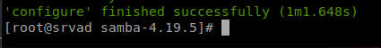
Comandos make e make install
Para finalizar a instalação do Samba execute os comandos make e make install:
make && make install
Atenção: este processo pode demorar dependendo de seu hardware. Aguarde!
Se não houver nenhum erro, ao final, deve aparecer um resultado parecido com a figura abaixo:
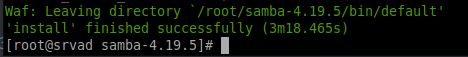
Execute o samba de qualquer diretório
Mude para o diretório /root e edite o arquivo: .bash_profile com os comandos:
cd /root
nano .bash_profile
Insira a linha:
.bash_profile
# Get the aliases and functions
if [ -f ~/.bashrc ]; then
. ~/.bashrc
fi
# User specific environment and startup programs
# ESTA LINHA
PATH=/usr/local/samba/bin/:/usr/local/samba/sbin/:$PATH
export PATH
Salve o arquivo
Para salvar: control+o e para sair: control+x
Serviço Systemd Samba
Antes de criar o arquivo de serviço systemd do samba execute os comandos:
systemctl mask smbd nmbd winbind
systemctl disable smbd nmbd winbind
Crie o arquivo em: /etc/systemd/system/samba-ad-dc.service com o editor de textos nano
nano /etc/systemd/system/samba-ad-dc.service
Contendo as seguintes linhas (copie e cole para seu arquivo):
[Unit]
Description=Samba Active Directory Domain Controller
After=network.target remote-fs.target nss-lookup.target
[Service]
Type=forking
ExecStart=/usr/local/samba/sbin/samba -D
PIDFile=/usr/local/samba/var/run/samba.pid
ExecReload=/bin/kill -HUP $MAINPID
[Install]
WantedBy=multi-user.target
Salve o arquivo
Para salvar: control+o e para sair: control+x
Recarregue o systemd com o comando:
systemctl daemon-reload
Habilite o samba-ad-dc para iniciar no boot do sistema:
systemctl enable samba-ad-dc
Verificar dispositivo de rede
Verifique em qual dispositivo de rede está sua conexão. No terminal execute o comando:
ip a
O resultado deve ser parecido como abaixo:
2: ens18: <BROADCAST,MULTICAST,UP,LOWER_UP> mtu 1500 qdisc fq_codel state UP group default qlen 1000
link/ether de:1e:07:63:42:51 brd ff:ff:ff:ff:ff:ff
altname enp0s18
inet 10.1.1.120/24 brd 10.1.1.255 scope global noprefixroute ens18
OBS: o ens18 neste caso é seu dispositivo de rede
Desabilitar SELinux
Edite o arquivo /etc/selinux/config com o editor nano:
nano /etc/selinux/config
Encontre a linha e mude para disabled como mostra abaixo:
# disabled - No SELinux policy is loaded.
SELINUX=disabled
Salve o arquivo:
Para salvar: control+o e para sair control+x
Reboot o sistema
Faça um reboot do sistema com o comando:
reboot
Provisionar o Samba
Vamos Provisionar o Samba. No terminal execute o comando:
Obs: não esqueça de alterar para o seu dispositivo de rede
samba-tool domain provision --use-rfc2307 --interactive --option="interfaces= lo ens18" --option="bind interfaces only=yes"
Responda as questões referente ao seu cenário:
Realm: SEU.Dominio
Domain [AD]: Domínio
Server Role (dc, member, standalone) [dc]: dc
DNS backend (SAMBA_INTERNAL, BIND9_FLATFILE, BIND9_DLZ, NONE) SAMBA_INTERNAL]: SAMBA_INTERNAL
DNS forwarder IP address (write 'none' to disable forwarding) [SEU_IP_DNS]:IP DNS
Administrator password: escolher uma senha
Retype password: repetir a mesma senha
OBS: Guarde a senha de provisionamento
Configure o arquivo krb5.conf
Execute o comando abaixo:
cp /usr/local/samba/private/krb5.conf /etc/krb5.conf
Restart o serviço do samba-ad-dc com o comando:
systemctl restart samba-ad-dc
Para parar serviço fazer o comando:
systemctl stop samba-ad-dc
Se necessitar desabilitar o serviço, utilizar o comando:
systemctl disable samba-ad-dc
Verificar versão do samba
smbclient --version
Testar o samba
smbclient -L localhost -U%
Verificar o DNS (ldap)
host -t SRV _ldap._tcp.seu.dominio
Verificar kerberos
host -t SRV _kerberos._udp.seu.dominio.
Verificar a Gravação A
host -t A seu.dominio
Verificar a autenticação do Kerberos
A senha utilizada será sua senha inserida no provisionamento do samba. Execute o comando abaixo:
kinit Administrator
Password for Administrator@SEU.DOMINIO:
Warning: Your password will expire in 41 days on Tue 22 Sep 2020 03:41:22 PM IST
Listar o cache dos tickets
Liste o cache dos tickets com o comando:
klist
A resposta deve ser parecida com essa:
Valid starting Expires Service principal
13/04/2023 13:54:57 13/04/2023 23:54:57 krbtgt/SEU.DOMINIO@SEU.DOMINIO
renew until 14/04/2023 13:54:50
Configure o Firewall
Adicione os serviços: dns, ldap, ldaps e kerberos com o comando:
firewall-cmd --add-service={dns,ldap,ldaps,kerberos}
Abra as portas TCP utilizadas pelo samba:
firewall-cmd --permanent --zone=public --add-port={53/tcp,88/tcp,135/tcp,139/tcp,389/tcp,445/tcp,464/tcp,636/tcp,3268/tcp,3269/tcp,49152-65535/tcp};
Abra as portas UDP utilizadas pelo samba:
firewall-cmd --permanent --zone=public --add-port={53/udp,88/udp,123/udp,137/udp,138/udp,389/udp,464/udp};
Recarregue o Firewall com o comando:
firewall-cmd --reload
Replicação do SysVol
Replicar o SysVol (backup do AD-DC1) para um Segundo Controlador de Domínio: DC2. Para fazer o segundo DC2 clique aqui .
Gere uma chave ssh com o comando: ssh-keygen no Primeiro Controlador de Domínio DC1 com o comando:
ssh-keygen -t rsa
Algumas perguntas serão feitas, como estas abaixo:
Onde salvar o arquivo de chave, que neste caso: (/root/.ssh/id_rsa): tecle enter
Entre com uma senha (ou apenas digite enter para ficar sem senha): tecle enter
Entre com a senha novamente. Apenas: tecle enter
A saída será algo como:
Your identification has been saved in /root/.ssh/id_rsa.
Your public key has been saved in /root/.ssh/id_rsa.pub.
Assim que a chave for criada, precisamos copia-la para o Segundo Controlador de Domínio DC2. Execute o comando:
ssh-copy-id root@IP-Seu-DC2
Insira a senha do root de seu DC2. Após a resposta do comando a chave criada será copiada para o seu DC2 e estará apto a acessar o DC2 de forma automática.
Após o comando, uma tela parecida com a saída abaixo deve aparecer.
Analise os comandos na figura abaixo:
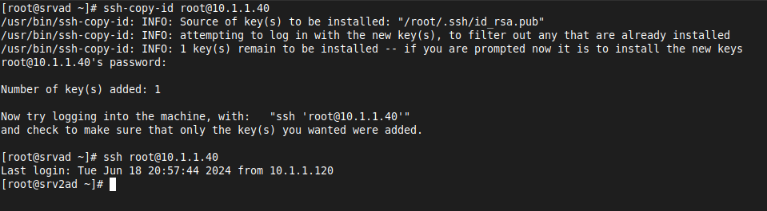
Volte para seu DC1
Backup arquivo idmap.ldb
No seu DC1:
Para fazer a replicação do sysvol do DC1 para o DC2, o DC2 deve ter o mesmo mapa ID para os usuários e grupos. Execute o comando para fazer um backup do arquivo idmap.ldb:
tdbbackup -s.bak /usr/local/samba/private/idmap.ldb idmap.bak
Com o arquivo de backup gerado: idmap.ldb.bak vamos utilizar o comando pwd que lista o caminho de diretório que estamos e com o comando ls idmap.ldb.bak listamos o arquivo desejado.
Analise a figura:
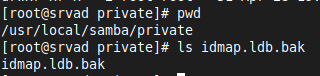
Podemos copiar o arquivo gerado para o caminho de seu DC2 executando o comando:
scp /usr/local/samba/private/idmap.ldb.bak root@IP-SEU-DC2:/usr/local/samba/private/
Veja a figura:
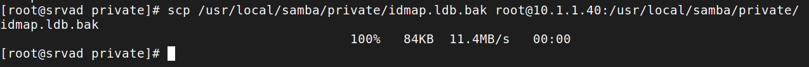
Conecte-se ao seu DC2
Conecte-se ao DC2 para renomear o arquivo de backup enviado através do DC1 (idmap.ldb.bak). Para renomear o arquivo, utilize o comando:
mv /usr/local/samba/private/idmap.ldb.bak idmap.ldb
Analise as figuras:
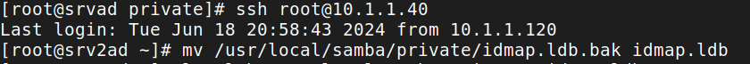
Listando o arquivo renomeado no DC2 (idmap.ldb)
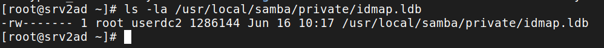
Reconecte-se ao seu DC1
Comando NTACL (samba-tool)
Execute o comando em seu DC1 (Controlador de Domínio Principal):
samba-tool ntacl sysvolreset
Sysvol Backup (DC1 para membro DC2)
Vamos executar um backup do DC1 para o DC2. Para efeito de teste, execute o comando utilizando a opção --dry-run para um teste sem alterações:
rsync --dry-run -XAavz --delete-after --progress --stats /usr/local/samba/var/locks/sysvol root@IP-DC2:/usr/local/samba/var/locks/sysvol/
O comando rsync fará uma copia do sysvol de seu DC1 (parte1) para o sysvol de seu DC2 (parte2): Verifique:
Parte 1:
rsync --dry-run -XAavz --delete-after --progress --stats /usr/local/samba/var/locks/sysvol/
Parte 2:
root@IP-DC2:/usr/local/samba/var/locks/sysvol/
O resultado deve ser algo parecido como abaixo:
building file list ...
12 files to consider
./
seu.dominio/
seu.dominio/Policies/
seu.dominio/Policies/{31B2F340-016D-11D2-945F-00C04FB984F9}/
seu.dominio/Policies/{31B2F340-016D-11D2-945F-00C04FB984F9}/GPT.INI
seu.dominio/Policies/{31B2F340-016D-11D2-945F-00C04FB984F9}/MACHINE/
seu.dominio/Policies/{31B2F340-016D-11D2-945F-00C04FB984F9}/USER/
seu.dominio/Policies/{6AC1786C-016F-11D2-945F-00C04FB984F9}/
seu.dominio/Policies/{6AC1786C-016F-11D2-945F-00C04FB984F9}/GPT.INI
seu.dominio/Policies/{6AC1786C-016F-11D2-945F-00C04FB984F9}/MACHINE/
seu.dominio/Policies/{6AC1786C-016F-11D2-945F-00C04FB984F9}/USER/
seu.dominio/scripts/
Number of files: 12 (reg: 2, dir: 10)
Number of created files: 9 (reg: 2, dir: 7)
Number of deleted files: 0
Number of regular files transferred: 2
Total file size: 40 bytes
Total transferred file size: 40 bytes
Literal data: 0 bytes
Matched data: 0 bytes
File list size: 0
File list generation time: 0.038 seconds
File list transfer time: 0.000 seconds
Total bytes sent: 2,011
Total bytes received: 51
sent 2,011 bytes received 51 bytes 1,374.67 bytes/sec
total size is 40 speedup is 0.02 **(DRY RUN)**
Com o resultado positivo (sem erros), utilize o comando sem a opção --dry-run . Desta forma o comando realmente será executado.
rsync -XAavz --delete-after --progress --stats /usr/local/samba/var/locks/sysvol dc2@IP-DC2:/usr/local/samba/var/locks/sysvol/
O resultado deve ser parecido como mostra abaixo:
building file list ...
12 files to consider
./
seu.dominio/
seu.dominio/Policies/
seu.dominio/Policies/{31B2F340-016D-11D2-945F-00C04FB984F9}/
seu.dominio/Policies/{31B2F340-016D-11D2-945F-00C04FB984F9}/GPT.INI
20 100% 0.00kB/s 0:00:00 (xfr#1, to-chk=7/12)
seu.dominio/Policies/{31B2F340-016D-11D2-945F-00C04FB984F9}/MACHINE/
seu.dominio/Policies/{31B2F340-016D-11D2-945F-00C04FB984F9}/USER/
seu.dominio/Policies/{6AC1786C-016F-11D2-945F-00C04FB984F9}/
seu.dominio/Policies/{6AC1786C-016F-11D2-945F-00C04FB984F9}/GPT.INI
20 100% 19.53kB/s 0:00:00 (xfr#2, to-chk=3/12)
seu.dominio/Policies/{6AC1786C-016F-11D2-945F-00C04FB984F9}/MACHINE/
seu.dominio/Policies/{6AC1786C-016F-11D2-945F-00C04FB984F9}/USER/
seu.dominioscripts/
deleting sysvol/seu.dominio/scripts/
deleting sysvol/seu.dominio/Policies/{6AC1786C-016F-11D2-945F-00C04FB984F9}/USER/
deleting sysvol/seu.dominio/Policies/{6AC1786C-016F-11D2-945F-00C04FB984F9}/MACHINE/
deleting sysvol/seu.dominio/Policies/{6AC1786C-016F-11D2-945F-00C04FB984F9}/GPT.INI
deleting sysvol/seu.dominio/Policies/{6AC1786C-016F-11D2-945F-00C04FB984F9}/
deleting sysvol/seu.dominio/Policies/{31B2F340-016D-11D2-945F-00C04FB984F9}/USER/
deleting sysvol/seu.dominio/Policies/{31B2F340-016D-11D2-945F-00C04FB984F9}/MACHINE/
deleting sysvol/seu.dominio/Policies/{31B2F340-016D-11D2-945F-00C04FB984F9}/GPT.INI
deleting sysvol/seu.dominio/Policies/{31B2F340-016D-11D2-945F-00C04FB984F9}/
deleting sysvol/seu.dominio/Policies/
deleting sysvol/seu.dominio/
deleting sysvol/
Number of files: 12 (reg: 2, dir: 10)
Number of created files: 9 (reg: 2, dir: 7)
Number of deleted files: 12 (reg: 2, dir: 10)
Number of regular files transferred: 2
Total file size: 40 bytes
Total transferred file size: 40 bytes
Literal data: 40 bytes
Matched data: 0 bytes
File list size: 0
File list generation time: 0.012 seconds
File list transfer time: 0.000 seconds
Total bytes sent: 4,091
Total bytes received: 106
sent 4,091 bytes received 106 bytes 2,798.00 bytes/sec
total size is 40 speedup is 0.01
Para automatizar o processo, insira o comando no crontab. Para aprender mais sobre o crontab clique aqui
Script crontab
Adicione um script no crontab para o backup ser automático com o comando:
crontab -e
Se for a primeira vez que executou este comando, pode aparecer um breve menu para selecionar o editor desejado como mostra abaixo. Selecione a opção 1 para o editor de textos nano:
Select an editor. To change later, run 'select-editor'.
1. /bin/nano <---- easiest
2. /usr/bin/vim.tiny
3. /bin/ed
Vá até a última linha e insira a linha de comando como abaixo:
0 12 * * 1-5 root rsync -XAavz --delete-after --progress --stats /usr/local/samba/var/locks/sysvol/ root@IP-DC2:/usr/local/samba/var/locks/sysvol/
Para salvar o arquivo, utilize o comando:
Para salvar control+o e para sair control+x